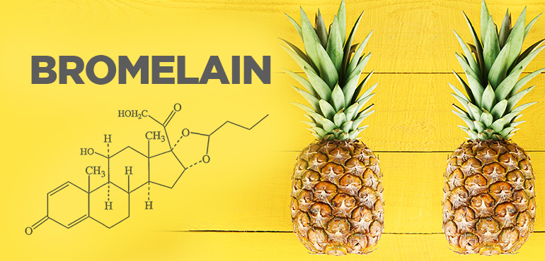

Pineapples were originally discovered in South America, most likely from the region between South Brazil and Paraguay!
The reason it feels like that is because the chemical bromelian dissolces the protective mocous that is covering your tongue and the roof of your mouth all the time, and the acidity of the pineapples is what irritates your mouth.
Pineapples are full of nutrients, have disease-fighting antioxidants, has enzymes that can ease Ldigestion, can reduce the chance of cancer, and many many more things.